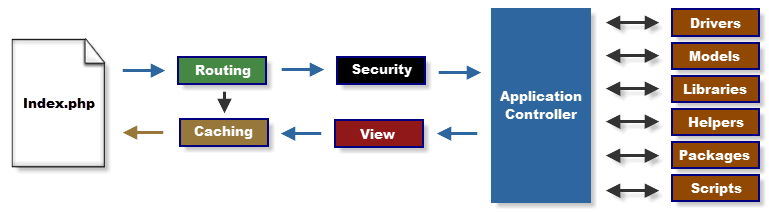

CI 동작 개념도 Application Flow Chart
아래 그림은 CI 사용시 데이터의 흐름을 보여줍니다(화살표를 따라가면서 설명을 읽어보세요):

- The index.php 는 프론트콘트롤러(front controller)로 동작하여 CI가 동작하기 위한 기반리소스들을 초기화 합니다.
- 라우터모듈(Routing)은 http 요청을 분석하여 어떤 동작을 해야할지를 결정합니다.
- 캐쉬파일이 있다면 그파일을 바로 브라우저로 보내고 일반적인 동작절차는 무시합니다.
- 보안모듈(Security)은 프로그램 컨트롤러가 로딩 되기전에 HTTP 요청및 어떤 사용자 전송데이터든지 모두 필터링합니다.
- 컨트롤러(Application controller)는 사용자 요청을 처리하기 위해 모델을 로드하고,코어라이브러리,헬퍼 및 필요한 다른 리소스들을 로드 합니다.
- 최종적으로 뷰모듈(View)이 렌더링되어 브라우저로 전송됩니다. 캐싱이 활성화 되어이다면 먼저 캐쉬(Cashing)하여 다음번 요청에 사용할 수 있도록 합니다.